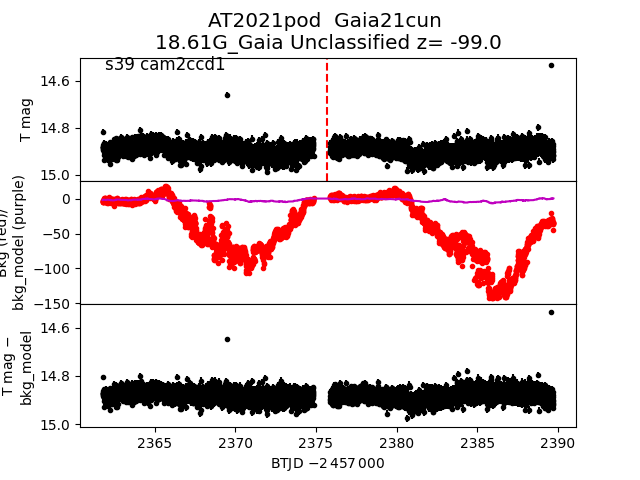
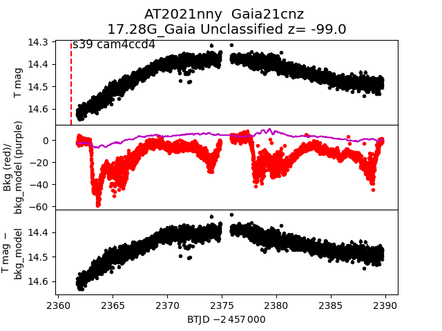
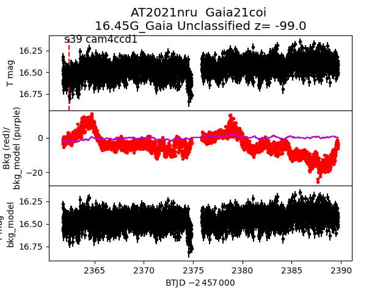

all transients in sector39 (36 total)
Each figure has three panels. The top panel shows the transient light curve, the middle panel shows the local background (estimated in an annulus), and the bottom panel shows a "background-model corrected" light curve. Details about the background model are in the README.
The vertical red line marks the time of discovery reported to TNS. Other useful metadata from TNS is in the figure title.
Note that the top and bottom panel are in magnitudes, while the middle panel is in differential flux units. The magnitudes are calibrated to the flux in the reference image used for image subtraction. Thus, flux from the host galaxy is included in these magnitudes.
3-sigma upper limits are plotted as triangles with no errorbars. A typical limiting magnitude is 19.6 in 30 minutes or 18.4 in 200 seconds (for low backgrounds).
The links allow you to download the light curve data as a text file.
More details in the README.
2021qpc 2021pod  2021nwi 2021paz 2021odw 2021qcv 2021nrt 2021opt 2021nws 2021quw 2021nwl 2021okj 2021qdc 2021qut 2021oww 2021oim 2021pje 2021qxa 2021nny  2021nwj 2021nwu 2021pbc 2021oum 2021nru  2021qit 2021rhx 2021qot 2021nry 2021qpb 2021nww 2021pfg 2021nwt 2021ouk 2021nwk 2021piy 2021qen